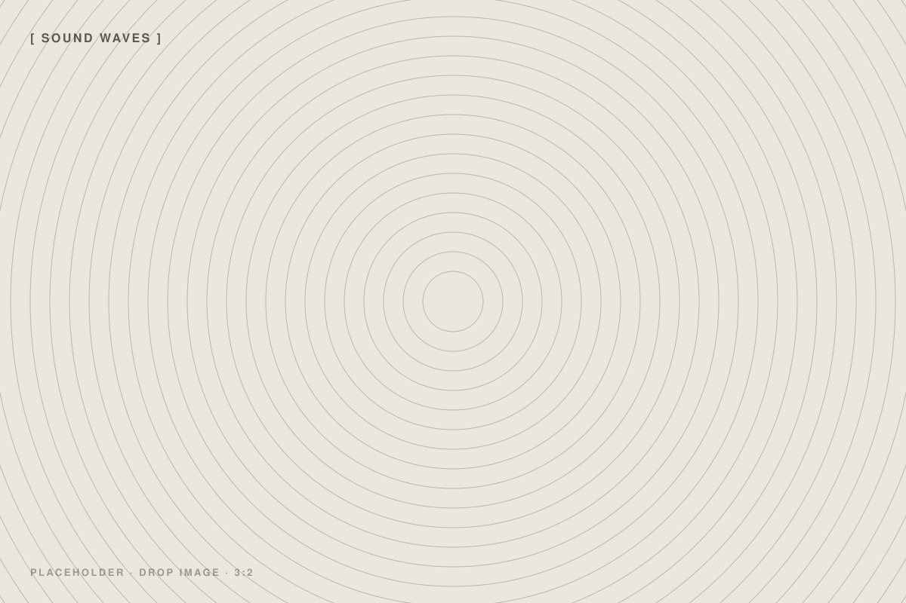
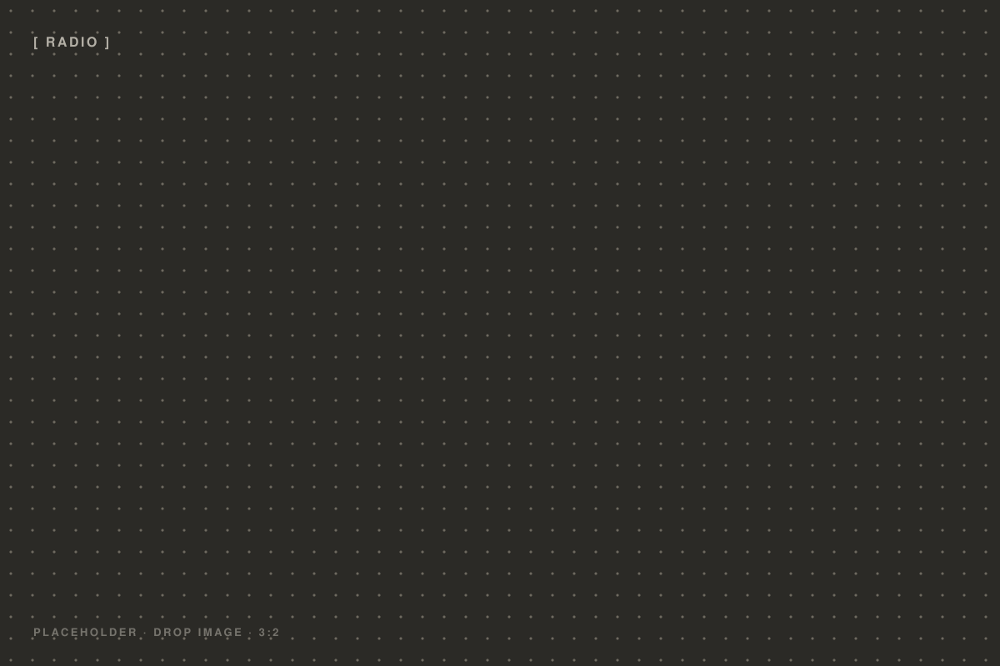

Photography: Mothanna Hussein.
Sounds
of Places
أصوات
الأماكن
Every place carries a distinct sonic signature. The resonance of stone walls, the rhythm of footsteps on limestone, the way sound bends through a vaulted ceiling or an open window onto a valley. Sounds of Places is a long-term project to record, archive, and listen to these signatures before they change.
لكلّ مكان بصمةٌ صوتيةٌ خاصة. رنينُ الجدران الحجرية، وإيقاعُ الأقدام على الكلس، وطريقةُ انعطاف الصوت عبر سقفٍ مقبّب أو نافذةٍ مفتوحة على وادٍ. «أصوات الأماكن» مشروعٌ طويل الأمد لتسجيل هذه البصمات وأرشفتها والإصغاء إليها قبل أن تتغيّر.
The project began in the autumn of 2025 with a series of recording sessions across the city — from the covered lanes of the Old City souk to the stone workshops of Beit Sahour, from quiet domestic interiors to the open terraces overlooking Wadi Karkafeh.
Participants are invited to share spaces they feel are acoustically significant: places that hold memory, ritual, or an overlooked everyday beauty. A grandmother's kitchen. A carpenter's workshop. A church at dawn.
The recordings are made with binaural microphones designed to capture the full three-dimensionality of a space — the listener, wearing headphones, enters the room.
The archive grows slowly, without a fixed endpoint. Each addition is listened to collectively at the Wonder Cabinet before it is made publicly available. Listening sessions are open to all, and are held without commentary — just sound, and the space of attention it creates.
The project is developing toward a broader cartography of sonic memory: part documentation, part meditation on the relationship between people, place, and time. In a city where the built environment is contested and the landscape shifts under pressure, to record a sound is also to hold a moment.
Future phases will include commissions from sound artists to respond to specific sites, and an expanded public programme of listening events.
"Every stone in Bethlehem holds a frequency we have not yet named."
«كلّ حجرٍ في بيت لحم يحمل ترددًا لم نسمِّه بعد.»


The sonic archive does not aim to be comprehensive. A comprehensive archive of Bethlehem's sounds would be impossible — and the attempt itself would distort what it sought to capture. Instead, the project works by attention and invitation, moving through the city by curiosity rather than by plan.
Each recorded space is documented with a short written note: location, time of day, season, who was present, what the recorder noticed. These notes accompany the audio files in the archive and form a parallel text — a journal of listening.
The Wonder Cabinet is working with Radio Alhara to broadcast selections from the archive as part of a series of radio programmes on sound, memory, and the built environment. The first broadcast is planned for early 2026.
The project is open to collaboration. If you have a space in Bethlehem that you would like to contribute to the archive — a home, a workshop, a ruin, a garden — get in touch at office@wondercabinet.space.